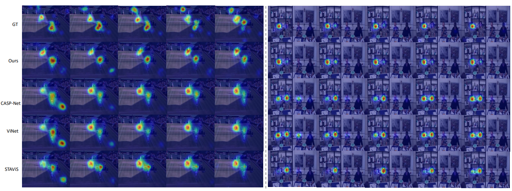

|  |
@inproceedings{xiong2024diffsal,
title={DiffSal: Joint Audio and Video Learning for Diffusion Saliency Prediction},
author={Junwen Xiong, Peng Zhang, Tao You, Chuanyue Li, Wei Huang and Yufei Zha},
booktitle={Proceedings of the IEEE/CVF Conference on Computer Vision and Pattern Recognition},
year={2024}
}